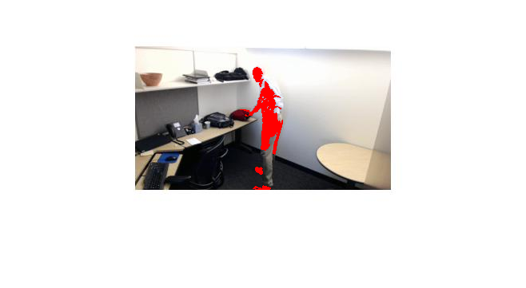

Contents
- Read in Image
- Display Colour Images
- gray scale conversion
- display b&w pic
- Find the difference in the image(image substraction)
- Finding Max location of Difference
- Use imtool to determine Threshhold and Length
- Threshholding
- Fill in Regions
- Overlay on original image
- threshhold of objects of correct size
- Determine if Change is Significant
Read in Image
img1 = imread('TestImage1.jpg'); img2 = imread('TestImage2.jpg');
Display Colour Images
figure imshow(img1) figure imshow(img2)
gray scale conversion
imgGray1 = rgb2gray(img1); imgGray2 = rgb2gray(img2);
display b&w pic
figure imshow(imgGray1) figure imshow(imgGray2)
Find the difference in the image(image substraction)
imgDiff = abs(imgGray1 - imgGray2); figure imshow(imgDiff)
Finding Max location of Difference
maxDiff = max(max(imgDiff)); [iRow, iCol] = find(imgDiff == maxDiff); [m,n] = size(imgDiff); imshow(imgDiff) hold on plot(iCol, iRow, 'r*')
Use imtool to determine Threshhold and Length
imtool(imgDiff)
Threshholding
imgThresh = imgDiff > 15; figure imshow(imgThresh) hold on plot(iCol,iRow, 'r*') hold off
Fill in Regions
imgFilled = bwareaopen(imgThresh, 15); figure imshow(imgFilled)

Overlay on original image
uses an external function called imoverlay
imgBoth = imoverlay(img2,imgFilled,[1,0,0]); figure imshow(imgBoth)
threshhold of objects of correct size
imageStats = regionprops(imgFilled, 'MajorAxisLength');
imgLengths = [imageStats.MajorAxisLength];
idx = (imgLengths > 80);
imageStatsFinal = imageStats(idx);
disp(imageStatsFinal)
MajorAxisLength: 86.4845
Determine if Change is Significant
if isempty(imageStatsFinal) disp('Nothing Different Here') else disp('Something is here') end
Something is here